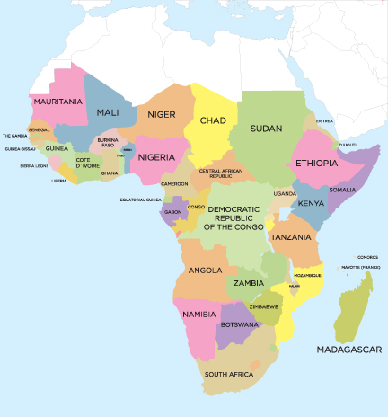
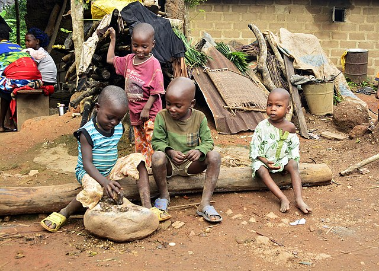

One of the Poorest Regions in the World
 Problem
Over 700 million people, 10% of the world's population, live in extreme poverty. Extreme poverty is defined as living on less than $1.90 USD a day. The majority of people living on under less than $1.90 USD reside in Sub-Saharan Africa. People living in extreme poverty have difficulties fulfilling basic needs such as health, education, clean water and sanitation.
Dimensions of Poverty
Poverty has multiple dimensions, and some of its effects are unemployment, social exclusion and high vulnerability of certain populations to disasters and diseases. Increasing inequality is detrimental to economic growth and undermines social cohesion, increasing political and social tensions and in some circumstances, driving instability and conflicts.
Causes of Poverty
The weaknesses of a state affects the fight against poverty in a number of ways.Governments in Sub-Saharan Africa do not have the data and administrative expertise for reliably identifying their poor. As a result, they are unable to target resources to them. Anti-poverty programmes in countries in Sub-Saharan Africa such as Malawi, Mali, Niger and Nigeria miss many of their poorest households.